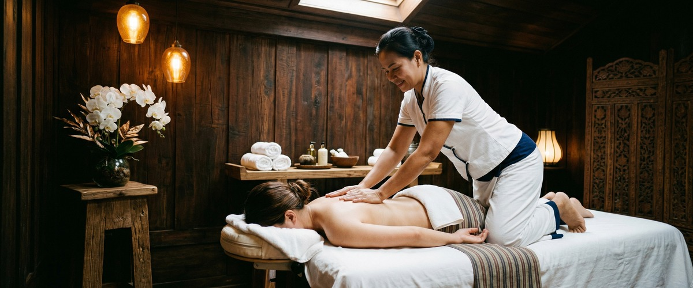
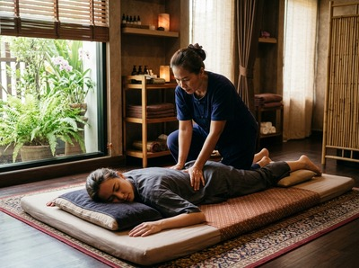

★★★★★ Quality gate failures: readability. Review and edit before removing this notice. ★★★★★
Most people book a Thai massage because they're sore, stressed, or both.

What they don't expect is to walk out feeling like they've been stretched, reset, and quietly transformed. Thai massage, a traditional technique rooted in ancient healing practice and taught at institutions like the Wat Pho school in Bangkok, works differently from the oil massages most people are familiar with.
There's no table, no draping, no slipping in and out of a drowsy state. It's active, engaged, and often surprisingly powerful — and the benefits go well beyond an hour of feeling relaxed.
One of the most well-documented benefits of Thai massage is what it does for your joints and muscles over time. The technique combines assisted stretching with acupressure along the body's sen energy lines — the traditional pathways that Thai practitioners work to open and balance.
Research confirms that Thai massage improves flexibility and range of motion by increasing blood flow and oxygen supply to muscle tissue.

For anyone spending long hours at a desk in Glasgow's city centre, this matters. Tight hip flexors, stiff upper backs, and locked shoulders are not just uncomfortable — they build up over time.
A regular traditional Thai massage gives those areas the movement they're not getting from daily life.
A 2015 study measured stress markers in participants before and after Thai massage. The results showed Thai massage reduced those markers more than simply resting.
That's not a small finding. It means your body enters a genuinely different state during treatment — not just a quieter one.
If sitting on the sofa isn't helping you unwind after a hard week, that research explains why. You can book a session online and give your nervous system something more useful than passive rest.
Studies have found that Thai massage can reduce the intensity of tension headaches and migraines. Benefits can last from several days to around fifteen weeks after treatment.
The reason makes sense: many headaches start in tight neck and shoulder muscles. That kind of tension builds in people who carry stress in their upper body.
Thai massage works directly into those areas through acupressure and assisted movement. It won't help every type of headache, but for the kind that starts at the base of your skull and spreads forward, it's worth taking seriously. Our article on natural pain relief through massage goes deeper into this if you want more detail.
A 2024 study found that Thai massage can help with muscle fatigue recovery after exercise. It adds to a growing body of evidence that it's a real tool for sports recovery and injury prevention.
The mix of compression, assisted stretching, and joint movement makes it well-suited to what active bodies demand.
Glasgow Thai Massage offers a dedicated Thai sports massage for clients who train regularly or are recovering from soft tissue strain. Whether you're dealing with post-run tightness or longer-term muscle imbalance, targeted Thai technique can make a real difference.
Lower back pain is one of the most common reasons people seek massage therapy. The evidence here is strong.
A clinical trial found that Thai massage produced a 67% improvement on the Oswestry Disability Index for people with non-specific lower back pain.
That's real clinical data, not anecdote. If you're managing ongoing lower back pain, Thai massage is a well-researched option worth discussing with both your GP and your therapist.
The range of Thai massage benefits is broader than most people expect before their first session. Flexibility, stress relief, headache relief, sports recovery, and back pain are all areas where the technique has solid, research-backed value.
At Glasgow Thai Massage, every session is led by practitioners trained in traditional Thai method. If your body has been asking for this kind of attention, now is a good time to listen.
Thai massage is done fully clothed on a floor mat, with no oils. Instead of long gliding strokes, Thai technique uses acupressure, assisted stretching, and joint movement along the body's sen energy lines.
The result is more active and dynamic. It addresses flexibility and muscle tension in ways that table-based massage typically doesn't.
Many clients notice a difference after just one session, especially in muscle tension and range of motion. For ongoing issues like back pain or persistent headaches, regular sessions tend to produce more lasting results.
Fortnightly or monthly appointments work well as a maintenance schedule once initial relief is established.
In many cases, yes. Thai massage has clinical evidence behind its use for lower back pain, and a 2024 study confirmed its value for muscle recovery in active people.
That said, every situation is different. Let your therapist know about any injuries or conditions before your session so the treatment can be adjusted. If you're managing a medical diagnosis, check with your GP first.
Loose, comfortable clothing works best. You stay fully clothed throughout, so fitted gym wear or stiff denim will limit your movement and your therapist's ability to work.
Yoga trousers or tracksuit bottoms and a comfortable top are ideal. Glasgow Thai Massage can advise if you're not sure what to bring.
Research confirms that Thai massage reduces measurable stress markers more effectively than rest alone. The mix of rhythmic pressure, assisted movement, and focused care creates a shift that passive relaxation doesn't reliably produce.
Clients dealing with work stress, anxiety, or burnout often find that regular sessions change how their body holds tension day to day.